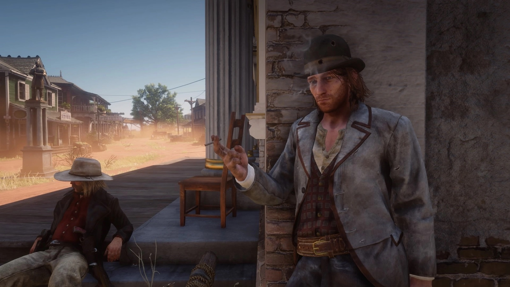
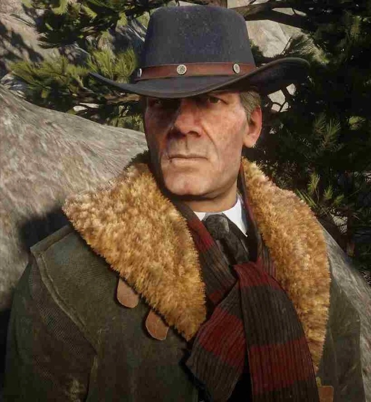
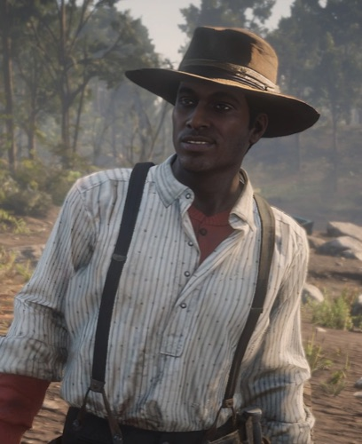
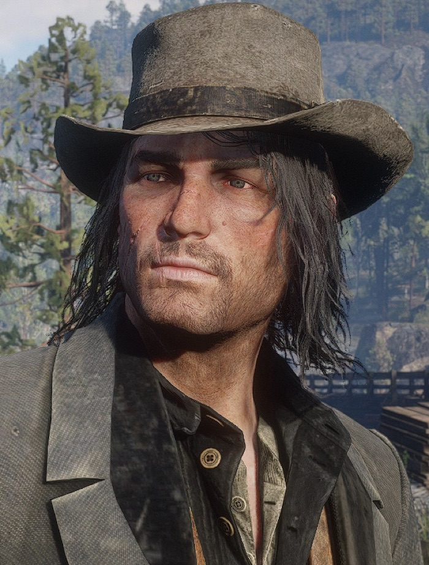

Character · Van der Linde gang
Sean MacGuire
Sean MacGuire is the loud, cocky young Irishman of the Van der Linde gang in Red Dead Redemption 2, the son of an Irish revolutionary and the camp's most reliable source of bravado and bad jokes. Beneath the swagger is a fierce loyalty to the only family he has.
Captured early in the story and rescued by the gang, Sean's joy at being home is cut brutally short, making him one of the game's most sudden and memorable losses.
- Died
- 1899
- Status
- Deceased
- Origin
- Irish
- Affiliation
- Van der Linde gang
- Role
- Young gunman
- Games
- Red Dead Redemption 2
Biography
The gang's loudest son
Sean is young, brash and endlessly talkative, forever boasting and picking fun. Early in 1899 he is captured by bounty hunters, and a major mission sees Arthur and the gang rescue him, a reunion the whole camp celebrates.

Personality
Sean hides his insecurity behind nonstop talk and swagger. He wants desperately to be taken seriously as a gunman, and for all his noise he is brave and loyal when it counts.
Relationships

Arthur Morgan
The gang enforcer who leads the mission to rescue Sean and is present for his sudden death.

Hosea Matthews
A gang elder and planner whose schemes Sean is eager to be part of.

Lenny Summers
A fellow young gang member and one of Sean's closest friends in camp.

Dutch van der Linde
The leader Sean is desperate to impress and prove himself to.

John Marston
A fellow gunman in the 1899 gang, part of the family that mourns Sean's loss.
Death and fate
Not long after his rescue, during a deal in the town of Rhodes, Sean is shot in the head mid-sentence by an ambushing bounty hunter. His sudden death stuns the gang and is one of the first signs that their world is collapsing.
Behind the scenes
Sean's death is deliberately abrupt and without ceremony, the game using his loss to puncture the camp's early optimism. It is often cited as one of Red Dead Redemption 2's most shocking moments.
Reception and legacy
Despite limited screen time, Sean is a fan favourite, remembered for his humour and the gut-punch of his exit. He is proof of how quickly Red Dead Redemption 2 can make players care, and then grieve.
Trivia
- Sean is the son of an Irish revolutionary and often invokes his father.
- A whole mission is devoted to rescuing him from bounty hunters.
- His death comes mid-sentence, with no warning.